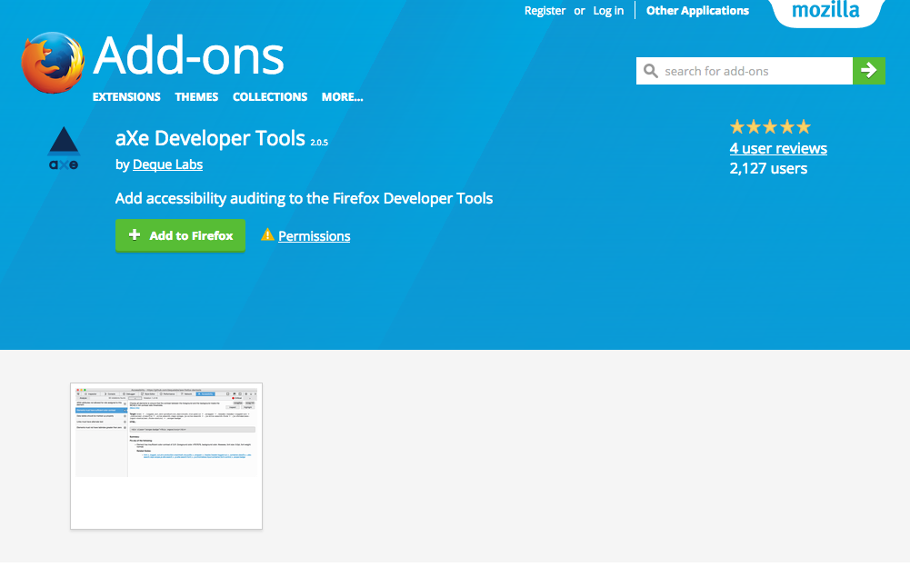
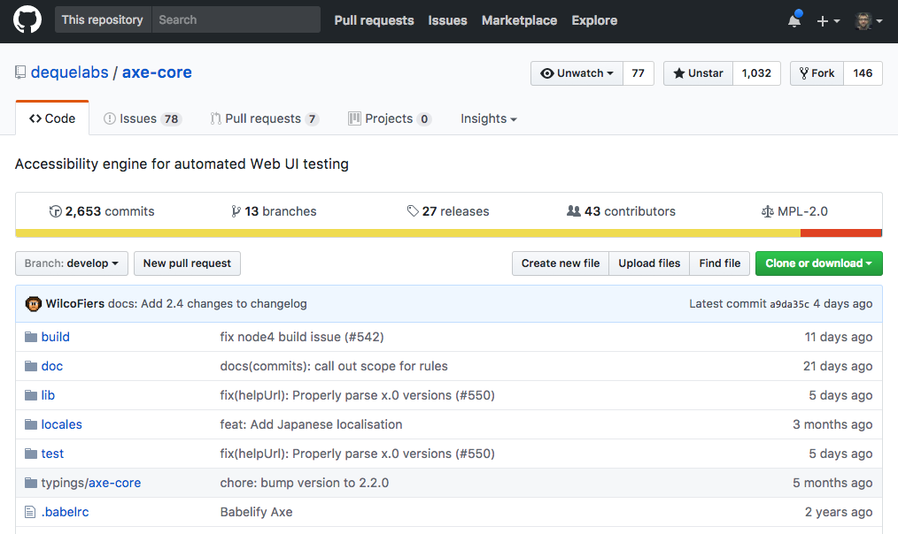
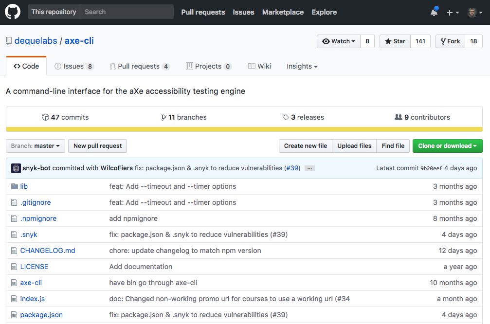

Introduction to aXe
Matt Isner, Deque Systems
Accessibility Debugging Basics
- Test with the keyboard
- Use aXe browser extensions
- Expose all UI and test again
- Check headings and landmark structure
aXe Extension for Chrome

aXe Extension for Firefox
aXe Extension Demo
aXe-core JavaScript API
Helpful Links
Things you'll need
- A terminal
- Node.js and npm
- Git and a Github account (optional)
- A page to test
Unit Test Demo
aXe-WebdriverJS Utility
Installing Drivers
Integration Test Demo
aXe-CLI
Install and run aXe CLI
$ npm install axe-cli -g
$ axe https://google.com
Stuck on sudo? Fixing npm permissions
Happy GAAD!
- Slides: isner.github.io/axe-tutorial
- Email: matthew.isner@deque.com